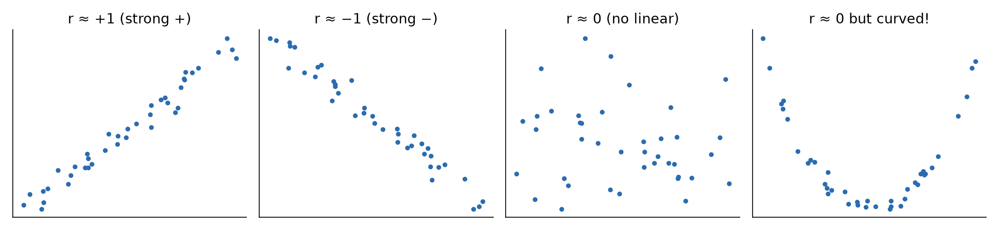
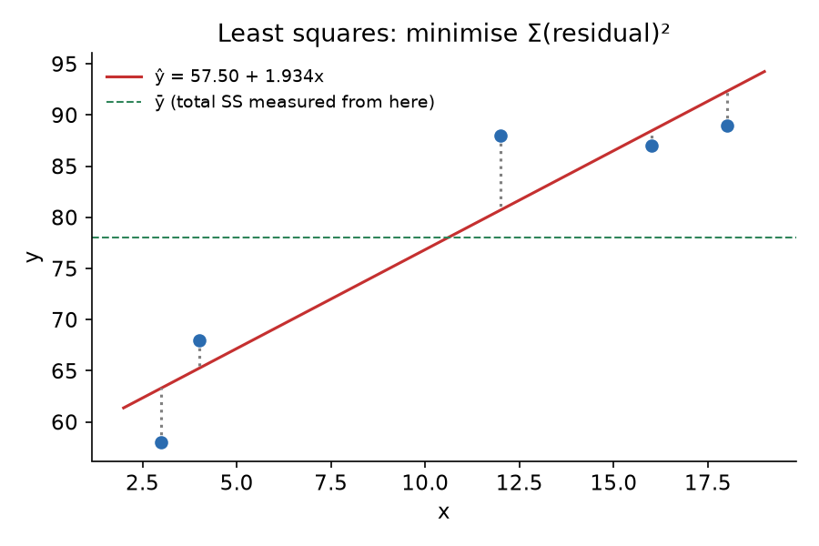

S6 · Correlation and Regression
Why this matters for the TF. A correlation or regression question has appeared in every one of the last five term finals, usually worth 12 to 20 marks.
You will be asked some mix of these: Pearson’s , the two regression lines with predictions, SST/SSR/, rank correlation (often with tied ranks), and fitting a second-degree polynomial.
The 2019-20, 2020-21 and 2021-22 questions are solved below. The 2022-23 and 2023-24 ones are in TF 2022-23 Solutions and TF 2023-24 Solutions.
Core tools (memorize)
Memorize: every formula in this topic
Building blocks — use in every problem:
Pearson’s correlation — strength and direction of a linear relation:
Always , and it links to the regression coefficients by
Regression coefficient of on — use to predict from a known :
Line of on :
Regression coefficient of on — use to predict from a known :
Line of on :
Goodness of fit — use when asked for SST, SSR, SSE, :
Rank correlation with ties — use when data are ranks, or when asked for “rank correlation”:
Second-degree fit — use for curved data. The three normal equations:
Theory the TF actually asks
These answers have been asked word for word. Learn them as written.
Pearson's correlation coefficient (2023-24 Q4b)
==Karl Pearson’s coefficient of correlation is a numerical measure of the strength and direction of the linear relationship between two quantitative variables.==
It is defined as the covariance of and divided by the product of their standard deviations:
It always lies between −1 and +1. is perfect positive, perfect negative, and means no linear relationship.
It is a pure number, unaffected by change of origin and scale.
Modifying the rank formula for repeated ranks (2023-24 Q4b)
When some observations are equal, ==each tied value gets the average of the ranks it would occupy==. Two values tying for ranks 3 and 4 both get 3.5; three values tying for 4, 5, 6 all get 5.
Because ties reduce the spread of the ranks, ==a correction factor is added to for every tied group in both variables==, where is how many times the value is repeated:
Values for quick use: gives 0.5, gives 2, gives 5.
Objectives of correlation and regression analysis (2023-24 Q4c)
Correlation analysis aims to find out whether two variables are related, to measure how strong that relationship is, and to tell whether it is positive or negative. It also tells us whether fitting a straight line is worthwhile.
Regression analysis aims to find the equation that describes the average relationship between a dependent variable and an independent variable.
It is used to predict unknown values of the dependent variable, for example yield for a given fertilizer dose. It also measures the change in for a unit change in (the regression coefficient) and how good the fit is ().
Correlation versus regression (2022-23 Q4b)
Correlation measures the degree of association between two variables, while regression gives the equation of the relationship and is used for prediction.
In correlation both variables are treated alike, so . In regression one variable is dependent and the other independent, so in general.
is a pure number between −1 and +1, but regression coefficients have units and can take any value.
Correlation does not show cause and effect, whereas regression is set up with a cause-and-effect direction in mind.
The two are linked by
Coefficient of determination
== is the proportion of the total variation in that is explained by the regression.== For a straight line .
For example, means 87% of the variation in is explained by , and 13% is due to other factors.

Problem types you will face
Type 1 — Pearson’s from raw data
Recognise it: “Compute the correlation coefficient and interpret.”
Recipe: make a table with and get the five totals. Compute , then .
Finish with one sentence on sign and strength: above 0.9 is very high, 0.7 to 0.9 high, 0.5 to 0.7 moderate, 0.3 to 0.5 low, and below 0.3 negligible.
Practice 1 (TF style): hours studied and marks
(hours): 2, 3, 5, 6, 8, 9, 10, 13. (marks): 45, 50, 58, 60, 68, 74, 76, 85.
Step 1 — calculation table.
2 45 4 2025 90 3 50 9 2500 150 5 58 25 3364 290 6 60 36 3600 360 8 68 64 4624 544 9 74 81 5476 666 10 76 100 5776 760 13 85 169 7225 1105 56 516 488 34590 3965 Step 2 — building blocks.
Step 3 — correlation.
Answer. , a very high positive correlation: students who study more hours get higher marks almost perfectly linearly.
Practice 2 (TF style): price and demand (negative correlation)
(price): 10, 12, 15, 18, 20. (demand): 40, 38, 30, 26, 20.
Given. , , , , , .
Step 1 — building blocks.
Step 2 — correlation.
Answer. , a very high negative correlation: as price rises, demand falls.
Type 2 — the two regression lines and predictions
Recognise it: “Find the two regression lines”, “most likely value of when “.
Recipe: compute and from the same values. Write both lines through , and then predict.
Which line for which prediction?
Regress the variable you want on the variable you know.
“Most likely age of husband when wife is 30” means husband from wife, so use the line of husband on wife.
Practice 3 (TF style): heights of fathers and sons
Father : 65, 66, 67, 67, 68, 69, 70, 72. Son : 67, 68, 65, 68, 72, 72, 69, 71. Find both lines, the son’s height when the father is 70, and the father’s height when the son is 66.
Given. , , , , , .
Step 1 — means.
Step 2 — building blocks.
Step 3 — regression coefficients.
Step 4 — the two lines.
on : , so
on : , so
Step 5 — predictions.
Son when father is 70:
Father when son is 66:
Check.
Answer. == and ==; son 70.33 in, father 66.36 in; , a moderate positive correlation.
Practice 4 (TF style): regression lines given, find means and
The two regression lines are and , and . Find , , and .
Step 1 — means. Both lines pass through , so solve them together.
40x-50y &= -330 && \text{(first line} \times 5)\\ 40x-18y &= 214 && \text{(second line)}\\ 32y &= 544 && \text{(subtract)}\\ \bar y &= 17 \end{aligned}$$ Then $8x=10(17)-66=104$, so $$\bar x=13$$ **Step 2 — which line is which?** Assume the first is $Y$ on $X$: $$y=0.8x+6.6 \quad\Rightarrow\quad b_{yx}=0.8$$ and the second is $X$ on $Y$: $$x=0.45y+5.35 \quad\Rightarrow\quad b_{xy}=0.45$$ Since $b_{yx}b_{xy}=0.36\le1$, the assumption is valid. (Had the product exceeded 1, we would swap them.) **Step 3 — correlation.** $$r=+\sqrt{0.8\times0.45}=0.6$$ **Step 4 — SD of $y$.** $$\sigma_y=\frac{b_{yx}\sigma_x}{r}=\frac{0.8\times3}{0.6}=4$$ **Answer.** **$\bar x=13$, $\bar y=17$, $r=0.6$, $\sigma_y=4$.**
Past TF 2019-20 Q6(a) (17 marks): signal strength on distance
Given. Distance (m): 13, 12, 17, 19, 14, 15, 15, 8, 13, 3. Strength (dB): 34.4, 38.4, 30.4, 29.7, 30.1, 33.9, 32.8, 35.2, 34.9, 36.8. .
Step 1 — totals (from the table):
Step 2 — building blocks.
Step 3 — slope.
Step 4 — intercept.
Step 5 — prediction at 10 m.
Answer. ====; predicted strength at 10 m = 34.99 dB. The signal weakens by about 0.46 dB per extra metre.
Past TF 2021-22 Q7(a) (20 marks): loblolly pines, both coefficients and
Step 1 — totals. Build the table for the 15 pairs.
Means:
Step 2 — building blocks.
Step 3 — (i) regression coefficient of on .
Step 4 — regression coefficient of on .
Step 5 — (ii) correlation.
Check.
Answer. , a very strong positive relationship. Denser wood is stronger, and means 92.6% of the variation in modulus of rupture is explained by specific gravity.
Type 3 — regression with SST, SSR, SSE and
Recognise it: “Find SSR and SST”, “coefficient of determination”.
Recipe: fit the line as in Type 2, then use , , , .

Past TF 2020-21 Q6(a) (15 marks): experience and performance
Given. : 16, 12, 18, 4, 3. : 87, 88, 89, 68, 58. .
Step 1 — calculation table.
16 87 256 1392 7569 12 88 144 1056 7744 18 89 324 1602 7921 4 68 16 272 4624 3 58 9 174 3364 53 390 749 4496 31222
Step 2 — building blocks.
Step 3 — (i) fitted line.
Step 4 — (ii) sums of squares.
Step 5 — (iii) coefficient of determination.
Answer. ====, SST = 802, SSR = 700.02, SSE = 101.98, = 0.873: 87.3% of the variation in rating is explained by experience.
Practice 5 (TF style): advertising and sales
: 1, 2, 3, 4, 5, 6. : 3, 5, 4, 7, 9, 10.
Given. , , , , . Means , .
Step 1 — building blocks.
Step 2 — fitted line.
Step 3 — sums of squares.
Step 4 — .
Answer. About 90.8% of the variation in sales is explained by advertising.
Type 4 — rank correlation (with and without ties)
Recognise it: “Compute the rank correlation coefficient”, judges’ rankings, or marks with repeated values.
Recipe: rank each variable separately in the same direction (smallest = 1). Give tied values the average rank. Find and , check , and add for every tie group.
Practice 6 (TF style): two judges, no ties
Ranks given by judge A: 1, 2, 3, 4, 5, 6, 7, 8. By judge B: 3, 1, 4, 2, 6, 8, 5, 7.
Step 1 — differences. (sum 0), so
Step 2 — rank correlation.
Answer. , fairly high agreement between the judges.
Practice 7 (TF style): marks, no ties, rank them yourself
: 48, 33, 40, 9, 16, 65, 24. : 13, 15, 24, 6, 4, 20, 9.
Step 1 — rank table.
48 6 13 4 2 4 33 4 15 5 −1 1 40 5 24 7 −2 4 9 1 6 2 −1 1 16 2 4 1 1 1 65 7 20 6 1 1 24 3 9 3 0 0 0 12 Step 2 — rank correlation.
Answer. .
Practice 8 (TF style): ties in both variables
Test X: 68, 64, 75, 50, 64, 80, 75, 40, 55, 64. Test Y: 62, 58, 68, 45, 81, 60, 68, 48, 50, 70.
Step 1 — rank table.
X Y 68 7 62 6 1 1 64 5 58 4 1 1 75 8.5 68 7.5 1 1 50 2 45 1 1 1 64 5 81 10 −5 25 80 10 60 5 5 25 75 8.5 68 7.5 1 1 40 1 48 2 −1 1 55 3 50 3 0 0 64 5 70 9 −4 16 0 72 Step 2 — ties and corrections.
In X, 64 occurs 3 times, sharing ranks 4, 5 and 6, so each gets 5 and the correction is 2.
In X, 75 occurs twice, sharing ranks 8 and 9, so each gets 8.5 and the correction is 0.5.
In Y, 68 occurs twice and gets 7.5, correction 0.5.
Step 3 — rank correlation.
Answer. , a moderate positive rank correlation.
Practice 9 (TF style): sales and expenses with many ties
Sales : 10, 15, 12, 15, 18, 20, 12, 25. Expenses : 8, 10, 10, 12, 15, 15, 9, 20.
Step 1 — ranks of . 10→1; the two 12s share ranks 2 and 3, so each gets 2.5; the two 15s get 4.5; 18→6; 20→7; 25→8.
Step 2 — ranks of . 8→1; 9→2; the two 10s get 3.5; 12→5; the two 15s get 6.5; 20→8.
Step 3 — differences. In order:
= 1, 4.5, 2.5, 4.5, 6, 7, 2.5, 8
= 1, 3.5, 3.5, 5, 6.5, 6.5, 2, 8
= 0, 1, −1, −0.5, −0.5, 0.5, 0.5, 0
Step 4 — correction. Two tie groups of size 2 in and two in :
Step 5 — rank correlation.
Answer. .
Type 5 — second-degree polynomial and
Recognise it: “Fit a second degree polynomial / parabola”, or data that rise and then fall.
Recipe: make a table with , write the three normal equations, and solve by elimination. Then with .
Shortcut for equally spaced
With an odd number of equally spaced points, use . Then and the equations almost solve themselves.
Give the answer in terms of and state what is, or convert back.
Practice 10 (TF style): direct method
: 0, 1, 2, 3, 4. : 1.0, 1.8, 1.3, 2.5, 6.3.
Step 1 — calculation table.
0 1.0 0 0 0 0 0 1 1.8 1 1 1 1.8 1.8 2 1.3 4 8 16 2.6 5.2 3 2.5 9 27 81 7.5 22.5 4 6.3 16 64 256 25.2 100.8 10 12.9 30 100 354 37.1 130.3 Step 2 — normal equations.
12.9 &= 5a+10b+30c && (1)\\ 37.1 &= 10a+30b+100c && (2)\\ 130.3 &= 30a+100b+354c && (3) \end{aligned}$$ **Step 3 — eliminate $a$.** $$\begin{aligned} (2)-2\times(1):\quad 11.3 &= 10b+40c\\ (3)-6\times(1):\quad 52.9 &= 40b+174c \end{aligned}$$ **Step 4 — solve.** $$c=0.55 \qquad b=-1.07 \qquad a=1.42$$ **Step 5 — fitted curve.** $$\hat y=1.42-1.07x+0.55x^2$$ **Step 6 — $R^2$.** Fitted values are 1.42, 0.90, 1.48, 3.16, 5.94. $$SSE=1.584$$ $$SST=\sum y^2-n\bar y^2=51.87-33.282=18.588$$ $$R^2=1-\frac{1.584}{18.588}=0.915$$ **Answer.** ==$\hat y=1.42-1.07x+0.55x^2$==, **$R^2=0.915$**.
Practice 11 (TF style): shortcut with
: 1, 2, 3, 4, 5. : 2, 6, 7, 8, 10.
Step 1 — shift the origin. Let , so .
Step 2 — the middle equation gives at once.
Step 3 — the other two equations.
33 &= 5a+10c\\ 62 &= 10a+34c \end{aligned}$$ Doubling the first and subtracting gives $-4=14c$, so $$c=-0.2857 \qquad a=7.1714$$ **Step 4 — fitted curve.** $$\hat y=7.171+1.8X-0.286X^2,\quad X=x-3$$ **Step 5 — $R^2$.** The fitted values 2.43, 5.09, 7.17, 8.69, 9.63 give $$SSE=1.657 \qquad SST=35.2$$ $$R^2=0.953$$ **Answer.** ==$\hat y=7.171+1.8X-0.286X^2$== with $X=x-3$; **$R^2=0.953$**.
Extra practice
Extra practice (try first, then open for answers)
E1. : 1 to 7; : 9, 8, 10, 12, 11, 13, 14. Find and the line of on .
Answer: , , , so and .
E2. : 12, 18, 18, 25, 30, 30, 30, 42; : 20, 25, 22, 30, 30, 35, 28, 40. Find the rank correlation.
Answer: ; the corrections are 0.5 (18) + 2 (30) in and 0.5 (30) in , total 3. So .
E3. Fit to : 1 to 6; : 5, 9, 12, 13, 12, 9.
Answer: , with .
E4. and . Find .
Answer: (it takes the common negative sign).
E5. Can and ?
Answer: No, because then , which is impossible.
Previous: S5 Moments Skewness and Kurtosis · Next: S7 Sampling Distributions CLT and Confidence Intervals · Home: index